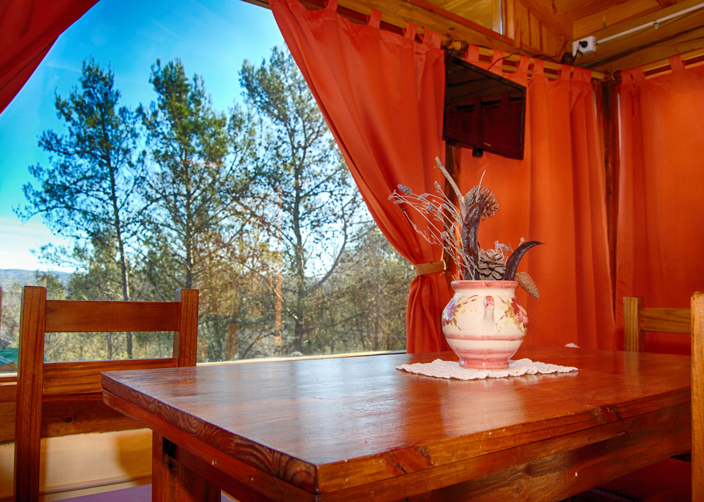
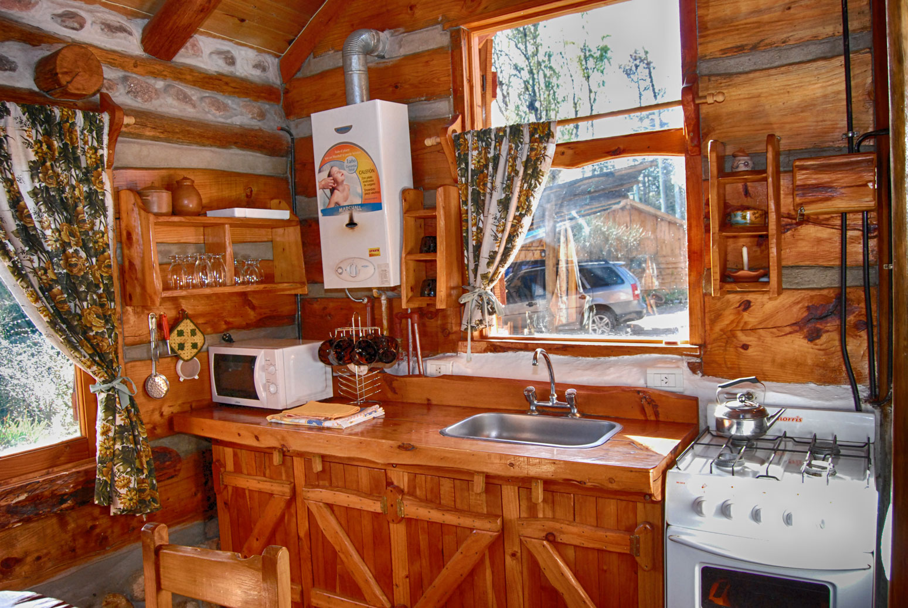
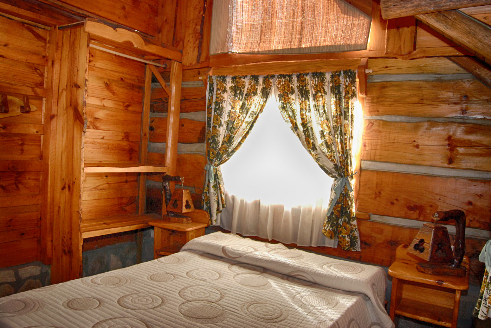
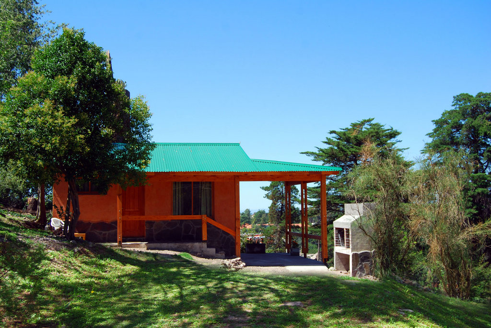
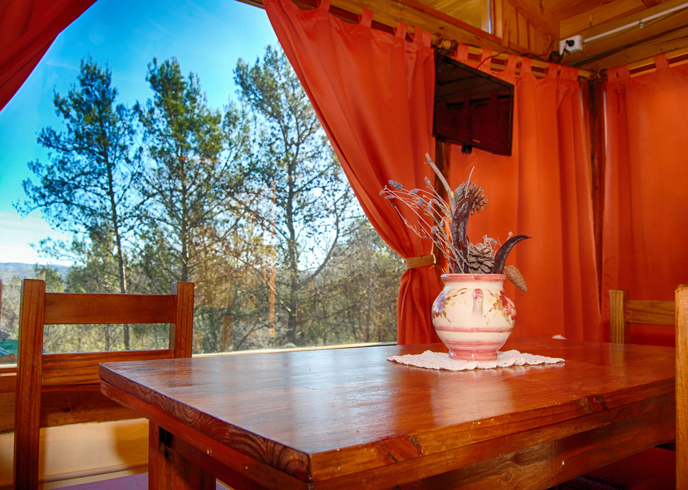
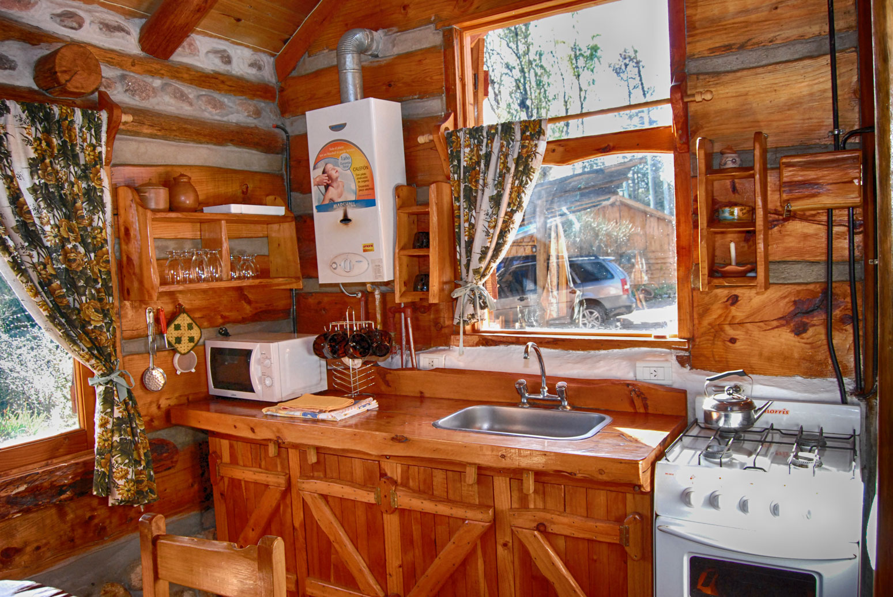
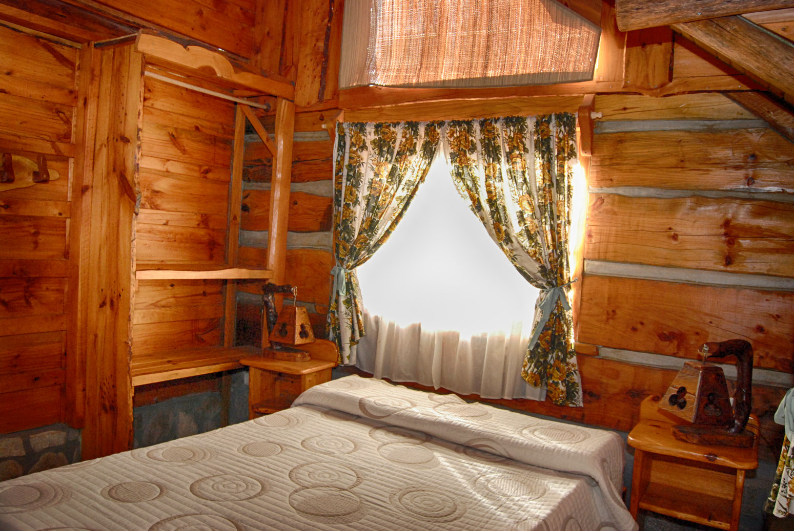
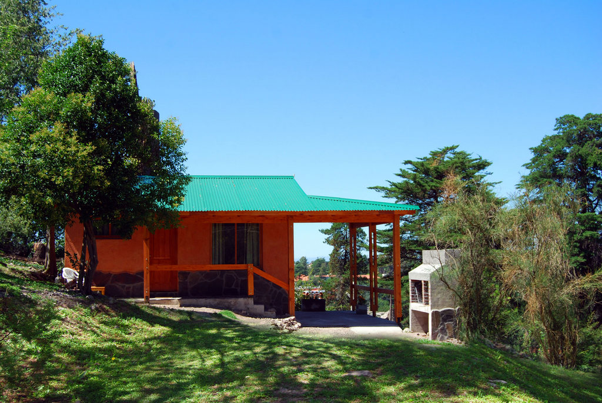

Nosotros
Bienvenidos a nuestra hermosa cabaña en el campo, donde podrás disfrutar de una estancia relajante en medio de la naturaleza. Nuestra cabaña está ubicada en un entorno idílico rodeado de montañas, praderas y bosques, lo que la convierte en el lugar perfecto para desconectar y disfrutar de la tranquilidad. La cabaña en sí es un refugio acogedor y cómodo, construido con materiales naturales como la madera y la piedra. Su decoración rústica y cálida te hará sentir como en casa, mientras que sus amplios ventanales te permitirán disfrutar de las vistas panorámicas del paisaje circundante. La cabaña cuenta con una cocina totalmente equipada, una cómoda sala de estar con chimenea y una terraza con muebles de exterior, donde podrás disfrutar de una cena al aire libre mientras contemplas el atardecer. En los alrededores de la cabaña encontrarás numerosas actividades al aire libre, como senderismo, pesca, ciclismo de montaña y paseos a caballo. También puedes disfrutar de un picnic en una de las praderas cercanas o simplemente relajarte en un banco junto a un arroyo. Si buscas un poco más de acción, hay varios pueblos cercanos donde puedes disfrutar de la gastronomía local, tiendas de artesanía y festivales. En resumen, nuestra cabaña en el campo es el lugar ideal para una escapada relajante y para disfrutar de la belleza de la naturaleza. ¡Esperamos darte la bienvenida muy pronto!
Galeria
 








Opiniones
Daniela
Mi experiencia en la cabaña fue simplemente espectacular. Desde el momento en que llegamos, nos quedamos impresionados con la belleza del entorno natural. La cabaña estaba ubicada en un lugar apartado, lo que proporcionaba una sensación de aislamiento y tranquilidad. Estaba equipada con todo lo que necesitábamos, desde una cocina totalmente equipada hasta una chimenea que proporcionaba calor y ambiente en las noches.
Hugo
Mi estancia en la cabaña fue una experiencia increíble. Si buscas una escapada relajante en medio de la naturaleza, recomiendo encarecidamente alojarte en una cabaña como esta. La tranquilidad y la belleza del entorno son incomparables, y la cabaña proporciona todas las comodidades que necesitas para tener una estancia agradable y cómoda.